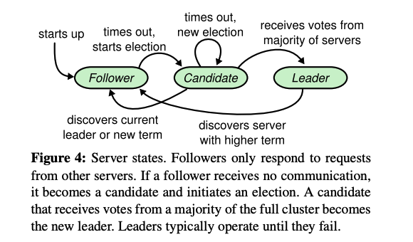
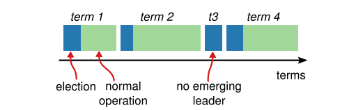

An understandable consensus algorithm
A distilled version of the Raft paper. For a more graphic version, see this visualization of Raft by The Secret Lives of Data.
A really good video review of the algorithm by Martin Kleppmann
For a BFT-resilient version of Raft, see Tangaroa.
Distributed Consensus
When you only have one machine, it is easy to figure out what the state of that machine is in. But what happens when you have multiple machines that need to agree on some value or state?
How do we arrive at a shared set of state across multiple machines that can be as far as opposite sides of the world? How do we handle machines crashing and become unable to respond to incoming requests?
This is the problem of distributed consensus
Replicated State Machines
Generally, this is done using a log of actions that are replicated across all machines. Keeping this replicated log consistent between all the machines is the job of the consensus algorithm. They allow a collection of machines to agree on some shared state which still make sense even when there is latency or unavailability.
In more formal language, consensus algorithms should typically have the following properties:
- Safety in the face of network delays, partitions, packet loss, duplication, and reordering (except under certain cases where there are no known solutions, e.g. Byzantine Fault Tolerance)
- Functional (available) as long as the majority of servers are operational and can communicate
- Latency resilient and does not depend on timing of messages to ensure consistency
Raft is one such consensus algorithm for managing a replicated log. It is an alternative to Paxos which is the main consensus algorithm in use over the last decade. The main aim is to make it understandable to builders and students alike.
It is important to note that Raft assumes that all messages have been authenticated/authourized. It hands this responsibility to the transport layer to deal with. As such, Raft does not have any protection against malicious actors. More discussion in this Google Groups conversation.
Consensus
Raft implements consensus by first electing a leader, then giving that leader temporary but complete responsibility for managing the replicated log. When a leader fails or becomes disconnected, a new leader is elected.
Given this approach, Raft decomposes this consensus into 3 independent subproblems
- Leader election: how do we choose a new leader when an existing leader fails?
- Log replication: how does the leader accept new log entries from clients and replicate them across all the other machines?
- Safety: when is it safe to consider log entries as ‘agreed upon’ and fully replicated across all machines?
A server can only be in one of 3 states:
- Leader: handles all client requests
- Follower: issues no requests but respond to requests from leaders and candidates
- Candidate: used to elect a new leader
State transitions follow the state diagram below: 
All Raft servers communicate using remote procedure calls (RPCs) that happen over the network. The basis consensus algorithm only requires 2 types of RPCs, RequestVote and Append-Entries. These are retried if a request times out and are issued in parallel for best performance.
Leader Election
Leaders are active for terms of arbitrary length (this is randomly determined as we will see later). These are numbered with consecutive and monotonically increasing integers.
Each term begins with an election in which one or more candidates attempt to become leader. If a candidate wins the election, then it serves as leader for the rest of the term.

Initiate State
Servers start up in the follower state.
A server remains in the follower state as long as it receives valid RPCs from a leader or candidate (this is usually in the form of a ‘heartbeat’ from a leader which is an empty AppendEntries RPC with no log entries).
If a follower receives no communication over a period of time called the election timeout (randomized between 150ms and 300ms), then it assumes there is no viable leader and begins an election to choose a new leader.
Beginning an Election
A follower increments its current term and transitions to candidate state. It then votes for itself and issues RequestVote RPCs in parallel to each of the other servers in the cluster.
It is important to note that a server can only vote once per election. It will give its vote to the first server that asks for it and meets the requirements for election. A server should only vote for a candidate if the candidate’s log is more up-to-date than its own. If the logs have different terms, the one with the larger term is more up to date. If the logs have the same term, the longer log is more up-to-date.
A candidate remains a candidate until one of 3 events happens:
- It wins the election. It received votes from a majority of servers in the cluster. Majority rule ensures that at most one candidate can win the election for a particular term. It then sends heartbeat messages to all other servers to establish authority and prevent new elections.
- Another server establishes itself as leader. Received an AppendEntries RPC from another server claiming to be leader. This claim is legitimate if the leader’s term is at least as large as the candidate’s current term.
- A period of time goes by with no winner. Possible if many followers become candidates at the same time, votes can be split so no candidate wins majority. When this happens, each candidate times out and starts a new election by incrementing its term and initiating another election. Raft uses randomized election timeouts to ensure split votes are rare.
After a leader has been elected, it beings servicing client requests.
Properties
Generally, Raft will be able to elect and maintain a steady leader as long as the system roughly follows the timing requirement: broadcastTime < 10 * electionTimeout < 100 * MTBF where broadcastTime is amount of time for a server to send an RPC to every server in the cluster and MTBF is the mean time between failure for a server.
Broadcast time should be roughly an order of magnitude less than the election timeout so that leaders can reliably send heartbeat messages required to keep followers from starting elections (similar to having RTT be roughly a magnitude smaller than request timeout).
The election timeout should be a few orders of magnitude less than MTBF so that the system makes steady progress. When a system crashes, it will be down for roughly the period of the election timeout.
Log Replication
Each client request is a command to be executed by the replicated state machines. The leader appends the command to its own log as a new entry, then issues AppendEntries RPCs in parallel to each of the other servers to replicate the entry.
A single log entry contains the state machine command from the client request along with the term number when the entry was received by the leader. A log entry is considered ‘safely replicated’ or committed once it is replicated on a majority of servers.
After an entry is committed, it applies the entry to its own state machine and returns the result of that execution to the client. When a follower learns a log entry is committed, it too applies the entry to its own state machine.
The Log Matching Property is maintained by Raft which guarantees
- Log entries with same index and term number store the same command
- Log entries with same index and term number mean that all preceding entries must identical (all log entries prior to that index are correctly replicated)
When a leader comes to power, it just begins normal operation, and the logs automatically converge in response to failures of the AppendEntries consistency check.
To bring a follower’s log into consistency with its own, the leader must find the latest log entry where the two logs agree. To do this, the leader keeps a value nextIndex for each follower which is the number of the next log entry the leader will send to that follower. The leader pings each follower with a AppendEntries RPC call with that nextIndex value. If this call is successful, the leader knows that this follower is up to date. If it fails, then the leader decrements nextIndex again until it reaches a log entry that does succeed. At this point, the follower’s logs will be removed (as anything between nextIndex and what the follower currently has is conflicting) and the follower’s log is now consistent with the leader’s and will remain that way for the rest of the term.
Unbounded Logs (Log Compaction)
In a practical system, a log cannot grow without bounds. The simplest solution is to use snapshotting where the entire current system state is written to a snapshot on stable storage, then the entire log up until that point is discarded.
All snapshots are taken independently by each server. Each snapshot contains data like last included index, last included term, and the state machine state.
Sometimes, snapshots need to be sent from leader to followers if the followers lag behind using the InstallSnapshot RPC. This can happen when the leader has discarded the next log entry that needs to be send to a follower (e.g. new server joining cluster).
When a server receives a InstallSnapshot RPC call, it usually discard its entire log. In the odd case where the server receiving the RPC call has more entries in its log than the snapshot, it deletes all log entries covered by the snapshot but entries following the snapshot are still valid and must be kept.
Other options like log cleaning and log-structured merge trees are also possible.
RPCs
All Raft RPCs are idempotent so sending multiple RPCs causes no harms (e.g. telling a follower to AppendEntries it already has does nothing).
Liveness Guarantees
Additionally, note that Raft (in its current specification) is not resilient to omission faults. This can be resolved with two additional RPCs however:
- PreVote: requires potential candidates to run a trial election to test if they can win an election before incrementing their term and running a normal election using RequestVote
- QuorumCheck: requiring leaders to actively step down if they do not receive AppendEntries responses from a majority of servers
Implementation
You can find a reference implementation on GitHub